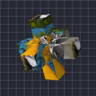

Croce a tre assi

Applica il livello a tre barre che si incrociano al centro.
Impostazioni
| Impostazione | Tipo | Intervallo | Predefinito |
|---|---|---|---|
| Rotazione X | Angolo | Da -3600° a 3600° | -25° |
| Rotazione Y | Angolo | Da -3600° a 3600° | -35° |
| Rotazione Z | Angolo | Da -3600° a 3600° | 0° |
| Lunghezza | Numero | Da 0.02 a 5 | 0.9 |
| Spessore | Numero | Da 0.01 a 2 | 0.22 |
| Uniformità | Numero | Da 0 a 1 | 0.15 |
| Posizione | Punto (X, Y) | Da -5000 px a 5000 px | 0 px, 0 px |
| Scala | Numero | Da 0.05 a 10 | 1 |
| Prospettiva | Numero | Da 0 a 1 | 0.5 |
| Ombreggiatura | Numero | Da 0 a 1 | 0.6 |
| Angolo luce | Angolo | Da -3600° a 3600° | 135° |
| Lucentezza | Numero | Da 0 a 1 | 0.3 |